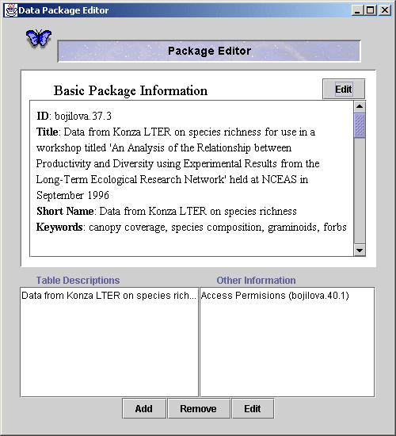
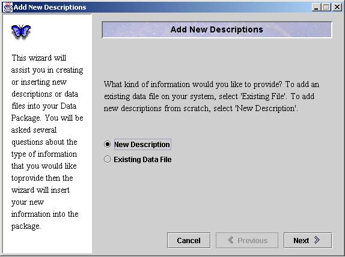
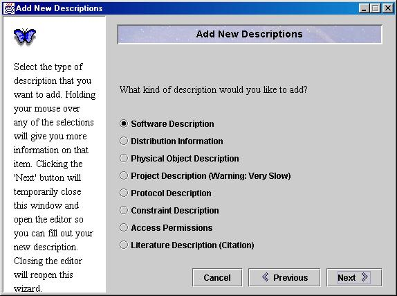

Morpho
User Guide
|
Morpho
User Guide
|
||||||
| KNB Home | Data | People | Informatics | Biocomplexity | Education | Software | |
| Editing an Existing Package | |
|
Package Editor
The Package Editor allows you to manipulate an existing data package. The editor is divided into two parts. The top of the window gives a summary of the basic information provided with each package. To edit this basic information, click the 'Edit' button in the upper right part of the window. The bottom part of the screen describes the components that exist in the package. The 'Table Descriptions' box shows all of the tables for which there is a description. Double clicking on a table description will bring up the Table Editor for editing the table and field information. The 'Other Information' box shows a list of all of the descriptions that do not describe table information. These include access control, distribution, software, and physical file descriptions. Double clicking on any of these descriptions will allow you to edit it. The 'Remove' button at the bottom will remove any description from the package. The 'Edit' button performs the same action as double clicking on a description (i.e. it opens an editor for the description). The 'Add' button opens the 'Add New Description' wizard which guides you through adding new descriptions or data files to your package. Add New Description Wizard
The New Description Wizard allows you to add information to your package to more accurately describe your dataset. The wizard also allows you to add a data file to your package. You may add as many data files to your package as you wish. The first question that the wizard asks is what type of information you would like to add. Select whether you would like to add a new data file or a new description (metadata) file. You will probably need to know a bit about each of these categories beforehand in order to effectively choose the right description file for adding more metadata!

|
|
|
|
 Previous
Morpho Editor Previous
Morpho Editor
|